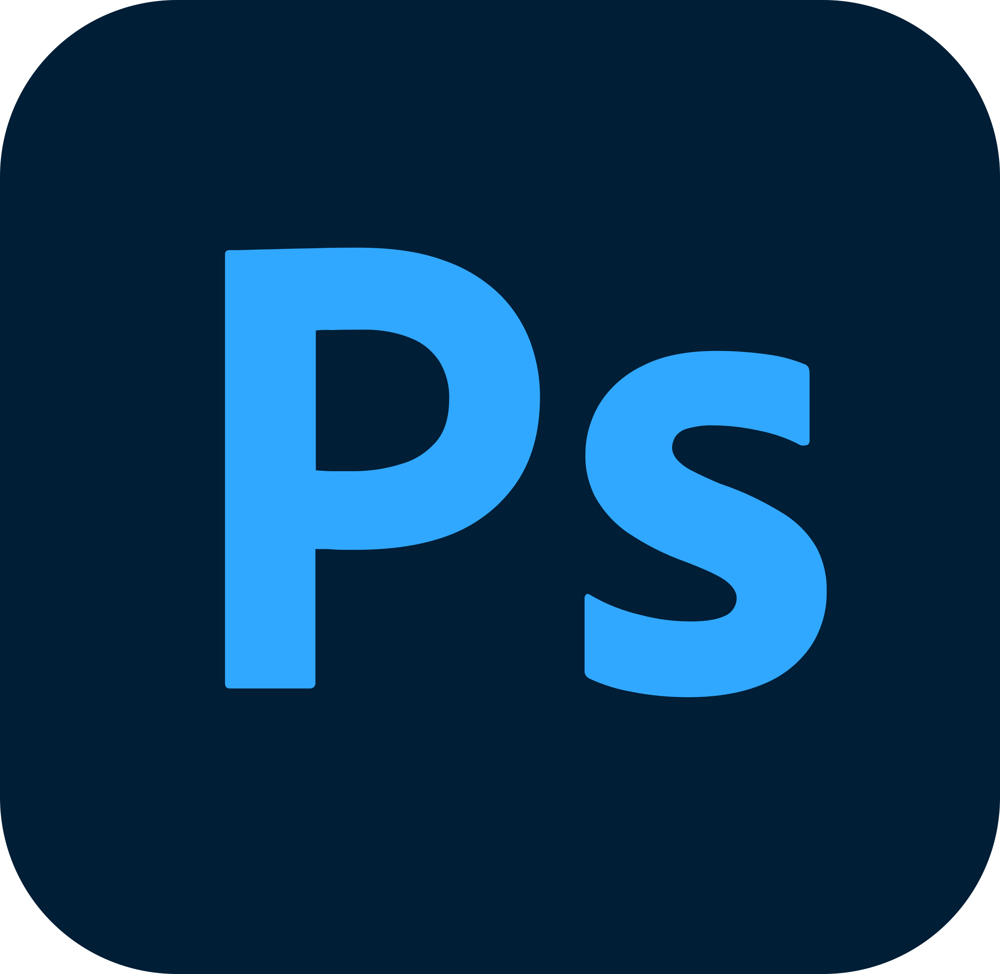

Spreadsheet Shinergy
Oki Windu Tanturi
Divisi: Associate Graphic Design
Departemen: Digital Marketing
Tanggung Jawab:
- Membuat desain antarmuka pengguna yang intuitif dan menarik.
- Berkolaborasi dengan tim pengembang untuk mengimplementasikan desain.
- Melakukan riset pengguna untuk mendapatkan feedback dan memperbaiki desain.
Software yang Digunakan:
 Adobe Illustrator
Adobe Illustrator

Adobe Photoshop
 Canva
Canva